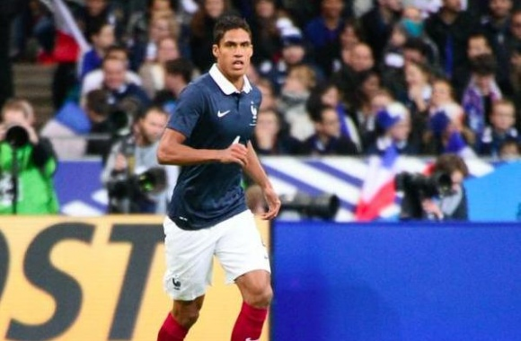

Championnats d'Europe de natation : Manaudou en or, le relais français en argent
La France a poursuivi sa moisson de médailles. Les championnats d'Europe de natation se sont achevés dimanche 21 mai à Londres avec de nouveaux titres pour les Français.
Manaudou en or sur 50 m nage libre. Champion olympique de la distance, Florent Manaudou a remporté la finale de sa course fétiche, le 50 m nage libre.
Les Français en argent au relais 4x100 m quatre nages. Le relais tricolore s'est classé deuxième de la finale du 4x100 m quatre nages,
grâce à Benjamin Stasiulis (dos), Giacomo Perez Dortona (brasse), Mehdy Metella (papillon) et Florent Manaudou (libre).
La France était déjà vice-championne d'Europe 2014 de cette épreuve collective.
Santamans tout près du podium.
Chez les femmes, Anna Santamans est passée tout près d'un podium dans la même discipline.
La Française se classe finalement quatrième.
Source : FranceTVinfo
Golden State Warriors VS Oklahoma City - Game5 !!
Dans l'obligation de s'imposer pour ne pas être éliminés aux portes d'une nouvelle Finale NBA, les Golden State Warriors se sont montrés à la hauteur de la tâche, jeudi soir, pour l'emporter à domicile (120-111) et revenir à 2-3 face à l'Oklahoma City Thunder.
Portés par un public bouillant de bout en bout, Stephen Curry et les siens n'ont pas traîné pour prendre les commandes. Ils ont pourtant eu du mal à creuser un écart conséquent (25-21, 12e) malgré la grande maladresse des visiteurs dans le premier quart (8/28).
Plus offensive, la deuxième période a également tourné en faveur des hommes de Steve Kerr, bien aidés par les joueurs du banc. Andre Iguodala (8 pts, 8 pds) et Marrese Speights (14 pts) se sont notamment mis en évidence afin de faire souffler les titulaires, qui ont ensuite obtenu huit points d'avance à la pause (58-50, 24e).
En face, Kevin Durant (40 pts à 12/31, 7 rbds) et Russell Westbrook (31 pts à 11/28, 7 rbds, 8 pds) ont longtemps paru esseulés.

Source : L'équipe
Le FC Barcelone cible un joueur du PSG !
En fin de contrat avec le FC Barcelone, Daniel Alves, est annoncé sur le départ. Bien que l’agent de l’international brésilien ait calmé le jeu concernant l’avenir de son protégé, le futur de l’ancien sevillan semble s’inscrire en dehors de la Catalogne.
Le club champion d’Espagne aurait même déjà quelques pistes pour remplacer le défenseur de 33 ans. Selon le média Sport, les dirigeants catalans, pencheraient pour Serge Aurier actuellement sous contrat avec le PSG ainsi que pour Bruno Peres, également ciblé par…le club champion de France.
Le Brésilien qui se trouve dans le viseur de plusieurs grands clubs européens pourrait quitter le Torino cet été si une offre d’environ 20 millions d’euros est proposée aux dirigeants italiens. Pour ce qui est de l’international ivoirien du PSG, depuis l’affaire Periscope, l’ancien toulousain, n’est plus vraiment désiré du côté de la capitale. Ainsi, en cas d’une offre concrète, les Parisiens pourraient laisser partir le latéral de 23 ans.
Source : Le Gorafi
LE GOLF
A Crécy, on va apprendre à taper la petite balle blanche avec la méthode rapide inventée par le champion gallois Bill Owens, qui permet, pour les plus doués, de passer paraît-il d'un index 40 (on débute à 54) à un index 4 (celui d'un très bon joueur) en quelques mois. Quasi miraculeux, sachant qu'un golfeur moyen met six mois pour décrocher sa carte verte - le sésame pour pouvoir jouer sur n'importe quel parcours - et passe généralement deux ans sur le practice avant améliorer son handicap de base de 54. En tout cas, l'argument peut faire mouche dans le petit monde des golfeurs, où les dirigeants d'entreprise sont de plus en plus nombreux. «Les patrons sont massivement venus au golf dans les années 80, rappelle Edouard Tuffier, qui organise une centaine d'événements chaque année avec sa société Swing. Soit par phénomène de mode, parce qu'ils avaient notamment découvert le golf au Club Med, qui a largement contribué à faire connaître ce sport, soit par cooptation pour rester dans leur milieu social.» Souvent, le golf est leur deuxième sport «car on voit rarement sur les parcours des gens de 30 ans", note Olivier Denis-Massé, directeur en charge du marketing, de la communication et des médias à la Fédération française de golf. «C'est vrai, le golf correspond mieux que les sports collectifs aux aptitudes physiques des dirigeants d'entreprise qui ont entre 40 et 50 ans», approuve Pierre Conte (index 9,8), président de GroupM France, filiale de WPP, le géant britannique de la publicité. Taxé de sport d'élite, le golf stagne en France autour de 420000 licenciés (800000 personnes font au moins cinq ou six parcours par an). Il est tout de même le sport individuel le plus pratiqué après le tennis. Un milieu «pas très ouvert sociologiquement», reconnaît Izy Behar, ancien DRH d'Eutelsat et organisateur du tournoi annuel de golf de l'Association nationale des DRH, qui a commencé à s'initier quand «André Rousselet, l'ancien président des taxis G7, jouait avec François Mitterrand, le jour de fermeture du golf de Saint-Cloud». Et parce que son patron de l'époque, chez Japan Airlines France, lui avait soufflé: «If you want to become a manager, you should play golf.» Pour Edouard Tuffier, «le golf souffre de préjugés", alors qu'on peut le pratiquer avec un budget raisonnable dans près de 700 clubs.
Source : Le Gorafi
Varane forfait pour l'Euro
Raphaël Varane est forfait pour l'Euro 2016. Blessé à la cuisse gauche, le défenseur central du Real Madrid, titulaire dans les plans de Didier Deschamps, va devoir renoncer à sa participation au championnat d'Europe. C'est Adil Rami, fraîchement sacré champion d'Europe avec le FC Séville, qui prendra sa place dans la liste des 23.  Ce mardi, Zinédine Zidane, le coach de Varane au Real, avait affirmé que son poulain de 23 ans ne disputerait pas la finale de la Ligue des champions, ce samedi, et qu'il en aurait « au moins pour deux à trois semaines » . Avec un Euro qui débute précisément dans 17 jours, personne n'a voulu prendre de risques et Varane a donc dû déclarer forfait. 17 jours, c'est donc le temps qu'il reste à Didier Deschamps pour composer sa charnière centrale idéale...